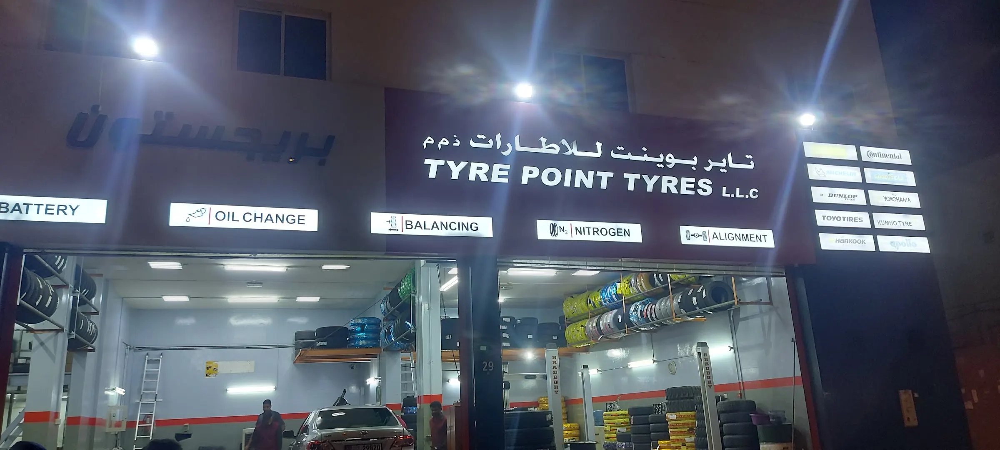
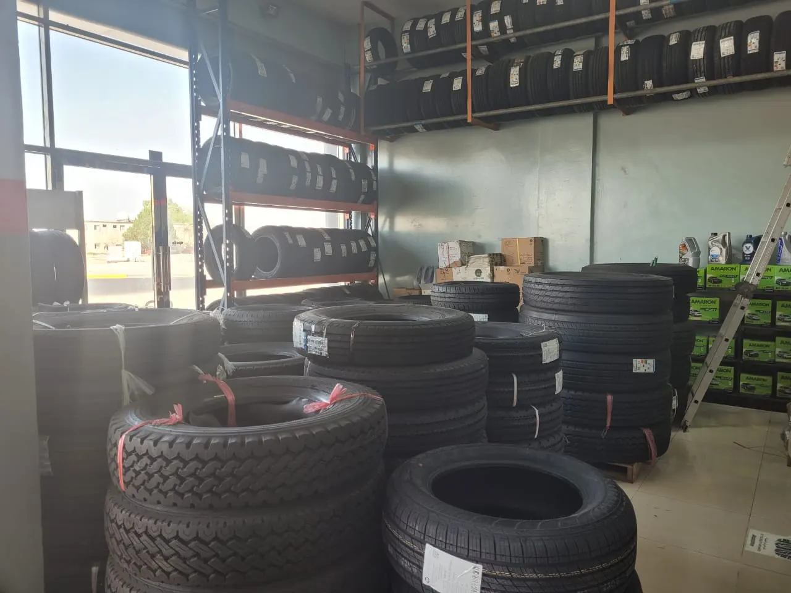
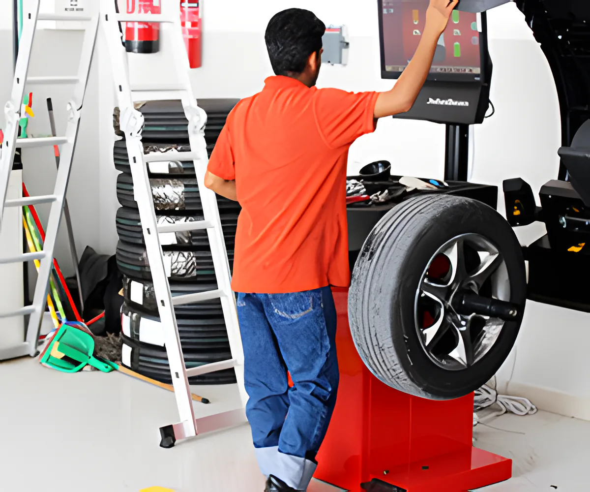
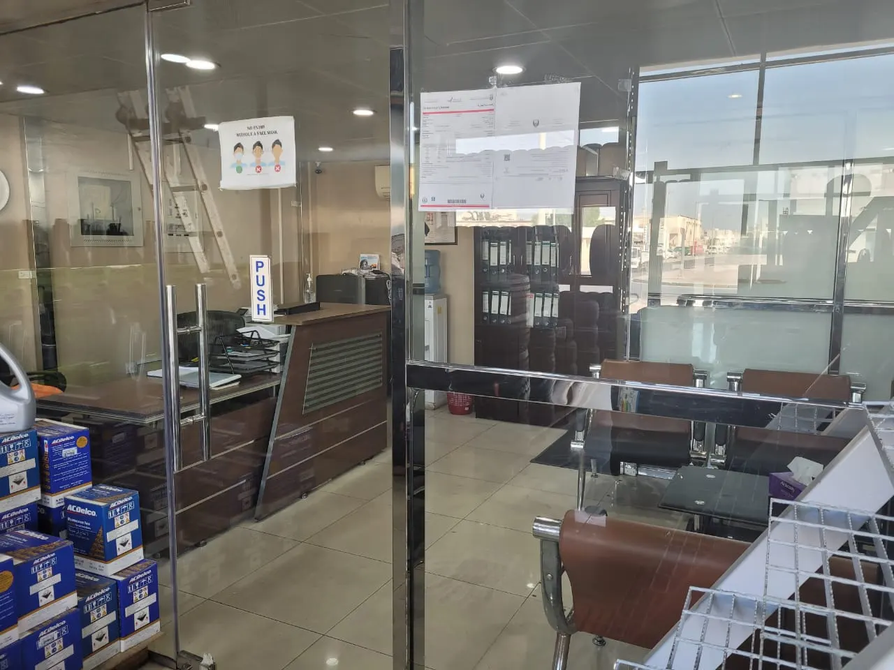

تاير بوينت للإطارات
نبيع ونركّب إطارات السيارات والـ SUV والدفع الرباعي في مصفح. بريجستون، ميشلان، كونتيننتال، يوكوهاما وغيرها على الرفوف، والميزان وضبط الزوايا في نفس الزيارة.
مصفح M10، أبوظبي
Tyre Point Tyres LLC
مفتوح يومياً من 8 الصبح
السبت–الخميس 8 ص–9 م
الجمعة 8 ص–12 ظ، 3:30–9 م



اقرأ إطارك وأرسل لنا المقاس
كل إطار مكتوب على جنبه المقاس. اختر نفس الأرقام الثلاثة هنا ونرد عليك على واتساب بالمتوفر عندنا والسعر مع التركيب والميزان. أو أرسل صورة جنب الإطار وبس.
تلقاه على جنب الإطار قريب من اسم الماركة. الأرقام الأربعة بعد كلمة DOT، مثل 2324، هي أسبوع وسنة صنع الإطار.
شغلنا في الورشة
جيب السيارة لشغلة وحدة أو لكلها. كل شي تحت سقف واحد في مصفح M10.
01الإطارات بكل الماركاتإطارات السيارات والـ SUV والدفع الرباعي
- بريجستون، ميشلان، كونتيننتال، جوديير، يوكوهاما، بيريلي وغيرها
- أرسل المقاس أو صورة جانب الإطار على واتساب
- نفك القديم ونركّب الجديد في نفس الزيارة

02تركيب الإطاراتنفك القديم ونركّب الجديد على الرافعة
03ميزان الإطاراتميزان إلكتروني لقيادة ناعمة
04ضبط الزوايا (الترصيص)السيارة تسحب على جنب؟ ابدأ من هنا
- مشابك على الأربع عجلات وقراءة على الشاشة
- السكان يرجع مستقيم
- يستاهل بعد الإطارات الجديدة أو بعد مطب قوي
05تدوير الإطاراتنبدّل الأمامي بالخلفي عشان يتآكلون بالتساوي
06تصليح البنشرمسمار في الإطار؟ جيبه
07تعبئة النيتروجيننعبّي الإطارات نيتروجين بدل الهواء
- مع الإطارات الجديدة أو لحاله
- نضبط الضغط حسب أرقام سيارتك
08زيت المحرك والفلترتغيير الزيت والسيارة على الرافعة
09البطارياتفحص البطارية وتبديلها في المحل
- نفحص البطارية قبل التبديل
- أرسل النوع والموديل والسنة
الماركات اللي على رفوفنا وعلى لوحة المحل.
محل إطارات، يديره ناس الإطارات
تاير بوينت للإطارات ذ.م.م تبيع الإطارات الأصلية وتسوي التركيب والميزان الإلكتروني وضبط الزوايا، من محلنا في مصفح بأبوظبي ومكتبنا في القصيص بدبي.
فريق المبيعات والفنيين عندنا جاي من كبرى شركات الإطارات. وكلمتين نمشي عليهم: الجودة والالتزام.

“I took two of my cars here. Both had issue with vibration, turned out it was a mechanical issue with the mounts and lower arms which they identified, and asked me to get it fixed and then come back for the alignment and balancing. Honest and professional, they could have just done the alignment and charged me, but instead saved me money.”داخل المحل






موقعنا
مفتوح الآنمصفح M10، أبوظبي. ص.ب 91328.
دوّر على لوحة تاير بوينت الحمراء جنب لوحة بريجستون الكبيرة، وادخل بالسيارة على طول للورشة.
| السبت | 8 ص – 9 م |
| الأحد | 8 ص – 9 م |
| الاثنين | 8 ص – 9 م |
| الثلاثاء | 8 ص – 9 م |
| الأربعاء | 8 ص – 9 م |
| الخميس | 8 ص – 9 م |
| الجمعة | 8–12، 3:30–9 م |
مكتب دبي: القصيص، ص.ب 80135. 04 252 1323 · 052 894 4884